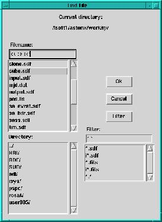

|  | File names can be entered directly in the appropriate entry box, or by clicking the Choose button to open the file chooser dialogue shown on the left. The file chooser is operated by single mouse clicks. On opening, the files in the current working directory are displayed. A new directory can be selected from the list box on the bottom left. A number of pre-set filters is supplied in the list box on the bottom right. Clicking one of these will cause only the files conforming to that filter to be displayed for selection. Alternatively users can supply their own filter directly into the entry box and then click the Filter button to apply it. That filter will then be the default until subsequently changed. Clicking Ok or pressing Return will cause the filename in the top entry box to be returned to the relevant file open dialogue. |